pacman::p_load(sf, tmap, tidyverse)Hands-on Exercise 1B: Thematic Mapping and GeoVisualisation with R
1 Overview
Thematic mapping involves the use of map symbols to visualize selected properties of geographic features that are not naturally visible, such as population, temperature, crime rate, and property prices.
Geovisualisation, on the other hand, is the process of using visual representations and cartographic techniques to explore, analyze, and communicate geospatial data. It combines elements of cartography, computer science, and information visualization to enhance spatial understanding and knowledge discovery.
This exercise explores how to create functional and truthful choropleth maps using the tmap package.
2 Getting Started
The key R package used for this exercise is tmap.
Beside tmap, five other R packages are used:
- readr for importing delimited text file,
- tidyr for tidying data,
- dplyr for wrangling data and
- sf for handling geospatial data.
Note
Among these, readr, tidyr, and dplyr are part of the tidyverse package.
Hence, only tidyverse needs to be installed, instead of readr, tidyr, and dplyr individually.
The code chunk below installs and loads these packages in RStudio.
3 Importing Data into R
3.1 The Data
Two datasets are used to create the choropleth map:
| Dataset | Format | Source | Description |
|---|---|---|---|
| Master Plan 2019 Subzone Boundary (No Sea) | GeoJSON | data.gov.sg | Geospatial data consisting of Singapore’s geographical boundary at the planning subzone level, based on URA Master Plan 2019 |
Singapore Residents by Planning Area / Subzone, Age Group, Sex and Type of Dwelling, June 2024 (respopagesextod2024.csv) |
CSV | Department of Statistics, Singapore | Aspatial data. Contains no coordinate values, but the PA and SZ fields serve as unique identifiers for georeferencing to the Master Plan 2019 Subzone Boundary |
3.2 Importing Geospatial Data into R
The code chunk below uses the st_read() function of sf package to import Master Plan 2019 Subzone Boundary (No Sea) into R as a simple feature data frame called mpsz.
mpsz <- st_read("data/geospatial/MasterPlan2019SubzoneBoundaryNoSeaGEOJSON.geojson") %>%
st_transform(crs = 3414)Reading layer `URA_MP19_SUBZONE_NO_SEA_PL' from data source
`C:\yxlinn\ISSS626-GAA\Hands-on_Ex\Hands-on_Ex01B\data\geospatial\MasterPlan2019SubzoneBoundaryNoSeaGEOJSON.geojson'
using driver `GeoJSON'
Simple feature collection with 332 features and 13 fields
Geometry type: MULTIPOLYGON
Dimension: XY
Bounding box: xmin: 103.6057 ymin: 1.158699 xmax: 104.0885 ymax: 1.470775
Geodetic CRS: WGS 84The imported mpsz contains 13 fields. This exercise will focus on four attribute fields: REGION_N, PLN_AREA_N, SUBZONE_N, and SUBZONE_C, along with the geometry column.
mpsz <- mpsz %>%
select(REGION_N, PLN_AREA_N, SUBZONE_N, SUBZONE_C, geometry)mpszSimple feature collection with 332 features and 4 fields
Geometry type: MULTIPOLYGON
Dimension: XY
Bounding box: xmin: 2667.538 ymin: 15748.72 xmax: 56396.44 ymax: 50256.33
Projected CRS: SVY21 / Singapore TM
First 10 features:
REGION_N PLN_AREA_N SUBZONE_N SUBZONE_C
1 CENTRAL REGION BUKIT MERAH DEPOT ROAD BMSZ12
2 CENTRAL REGION BUKIT MERAH BUKIT MERAH BMSZ02
3 CENTRAL REGION OUTRAM CHINATOWN OTSZ03
4 CENTRAL REGION DOWNTOWN CORE PHILLIP DTSZ04
5 CENTRAL REGION DOWNTOWN CORE RAFFLES PLACE DTSZ05
6 CENTRAL REGION OUTRAM CHINA SQUARE OTSZ04
7 CENTRAL REGION BUKIT MERAH TIONG BAHRU BMSZ10
8 CENTRAL REGION DOWNTOWN CORE BAYFRONT SUBZONE DTSZ12
9 CENTRAL REGION BUKIT MERAH TIONG BAHRU STATION BMSZ04
10 CENTRAL REGION DOWNTOWN CORE CLIFFORD PIER DTSZ06
geometry
1 MULTIPOLYGON (((25910.34 29...
2 MULTIPOLYGON (((26750.09 29...
3 MULTIPOLYGON (((29161.2 297...
4 MULTIPOLYGON (((29814.11 29...
5 MULTIPOLYGON (((30137.77 29...
6 MULTIPOLYGON (((29699.44 29...
7 MULTIPOLYGON (((27748.04 29...
8 MULTIPOLYGON (((30844.87 29...
9 MULTIPOLYGON (((27444.04 29...
10 MULTIPOLYGON (((30436.73 29...
Note
Why only the first 10 records are displayed?
sf objects print only the first 10 records by default to avoid flooding the console with all records.
3.3 Importing Attribute Data into R
The respopagesextod2024.csv file is imported into a tibble dataframe called popdata, using read_csv() of the readr package.
popdata <- read_csv("data/aspatial/respopagesextod2024.csv")3.4 Data Preparation
Before a thematic map can be prepared, a data table with year 2024 values is required. The data table includes the variables PA, SZ, YOUNG, ECONOMY ACTIVE, AGED, TOTAL, and DEPENDENCY.
- YOUNG: age group 0 to 4 until age group 20 to 24
- ECONOMY ACTIVE: age group 25-29 until age group 60-64
- AGED: age group 65 and above
- TOTAL: all age groups
- DEPENDENCY: the ratio between young and aged against the economy active group
3.4.1 Data Wrangling
The following data wrangling and transformation functions are used:
- pivot_wider() of the tidyr package, and
- mutate(), filter(), group_by(), and select() of the dplyr package
# Step 1: Group the data by PA (Planning Area), SZ (Subzone), and AG (Age Group)
popdata2024 <- popdata %>%
group_by(PA, SZ, AG)
# Step 2: Summarise the data by calculating the total population (POP) for each group
popdata2024 <- popdata2024 %>%
summarise(POP = sum(Pop)) %>%
ungroup()
# Step 3: Reshape the data from long to wide format, with age groups as column names
popdata2024 <- popdata2024 %>%
pivot_wider(names_from = AG, values_from = POP)
# Step 4: Calculate the YOUNG population (sum of selected age groups)
popdata2024 <- popdata2024 %>%
mutate(YOUNG = rowSums(.[3:6]) + rowSums(.[14]))
# Step 5: Calculate the ECONOMY ACTIVE population (sum of selected age groups)
popdata2024 <- popdata2024 %>%
mutate(`ECONOMY ACTIVE` = rowSums(.[7:13]) + rowSums(.[15]))
# Step 6: Calculate the AGED population (sum of selected age groups)
popdata2024 <- popdata2024 %>%
mutate(AGED = rowSums(.[16:21]))
# Step 7: Calculate the TOTAL population (sum of all age groups)
popdata2024 <- popdata2024 %>%
mutate(TOTAL = rowSums(.[3:21]))
# Step 8: Calculate the DEPENDENCY ratio (ratio of YOUNG and AGED to ECONOMY ACTIVE)
popdata2024 <- popdata2024 %>%
mutate(DEPENDENCY = (YOUNG + AGED) / `ECONOMY ACTIVE`)
# Step 9: Select the relevant columns to be retained in the final dataset
popdata2024 <- popdata2024 %>%
select(PA, SZ, YOUNG, `ECONOMY ACTIVE`, AGED, TOTAL, DEPENDENCY)3.4.2 Joining the attribute data and geospatial data
Before the georelational join, an extra step is required to convert the values in the PA and SZ fields to uppercase. This is necessary because the PA and SZ fields contain a mix of upper- and lowercase, while SUBZONE_N and PLN_AREA_N are entirely uppercase.
popdata2024 <- popdata2024 %>%
mutate_at(.vars = vars(PA, SZ),
.funs = list(toupper)) %>%
filter(`ECONOMY ACTIVE` > 0)Next, left_join() of dplyr is used to join the geographical data and attribute table using planning subzone name, e.g. SUBZONE_N and SZ as the common identifier.
mpsz_pop2024 <- left_join(mpsz, popdata2024,
by = c("SUBZONE_N" = "SZ"))
Note
left_join() of dplyr is used with mpsz as the left data table, to ensure that the output will be a simple features data frame.
write_rds(mpsz_pop2024, "data/rds/mpsz_pop2024.rds")4 Choropleth Mapping Geospatial Data Using tmap
Choropleth mapping involves the symbolisation of enumeration units, such as countries, provinces, states, counties or census units, using area patterns or graduated colors. For example, a social scientist may need to use a choropleth map to portray the spatial distribution of aged population of Singapore by Master Plan 2014 Subzone Boundary.
Two approaches can be used to prepare thematic map using tmap, they are:
- Plotting a thematic map quickly by using
qtm(). - Plotting highly customisable thematic map by using tmap elements.
4.1 Plotting a choropleth map quickly using qtm()
The easiest and quickest to draw a choropleth map using tmap is using qtm(). It is concise and provides a good default visualisation in many cases.
The following code draws a cartographic standard choropleth map.
tmap_mode("plot")
qtm(shp = mpsz_pop2024,
fill = "DEPENDENCY")
Note
Code Explanation:
tmap_mode()with “plot” option is used to produce a static map. To enable interactive mode, “view” option should be used.- fill argument is used to map the attribute (i.e. DEPENDENCY).
4.2 Creating a choropleth map by using tmap’s elements
Despite the usefulness of qtm() in drawing a choropleth map quickly and easily, the disadvantage is that it makes aesthetics of individual layers harder to control. To draw a high quality cartographic choropleth map as shown in the figure below, tmap’s drawing elements should be used.
tm_shape(mpsz_pop2024) +
tm_polygons(fill = "DEPENDENCY",
fill.scale = tm_scale_intervals(
style = "quantile",
n = 5,
values = "brewer.blues"),
fill.legend = tm_legend(
title = "Dependency ratio")) +
tm_title("Distribution of Dependency Ratio by planning subzone") +
tm_layout(frame = TRUE) +
tm_borders(fill_alpha = 0.5) +
tm_compass(type="8star", size = 2) +
tm_scalebar() +
tm_grid(alpha =0.2) +
tm_credits("Source: Planning Sub-zone boundary from Urban Redevelopment Authority (URA)\n and Population data from Department of Statistics (DOS)",
position = c("left", "bottom"))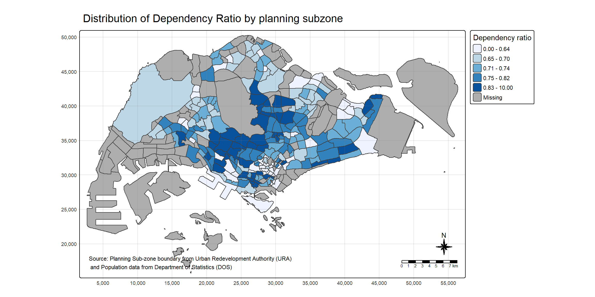
The following sub-sections cover the tmap functions used to plot these elements.
4.2.1 Drawing a base map
The basic building block of tmap is tm_shape() followed by one or more layer elemments such as tm_polygons(), tm_symbols(), tm_lines(), tm_raster(), and tm_text().
In the code chunk below, tm_shape() defines the input data (i.e mpsz_pop2024) and tm_polygons() draws the planning subzone polygons.
tm_shape(mpsz_pop2024) +
tm_polygons()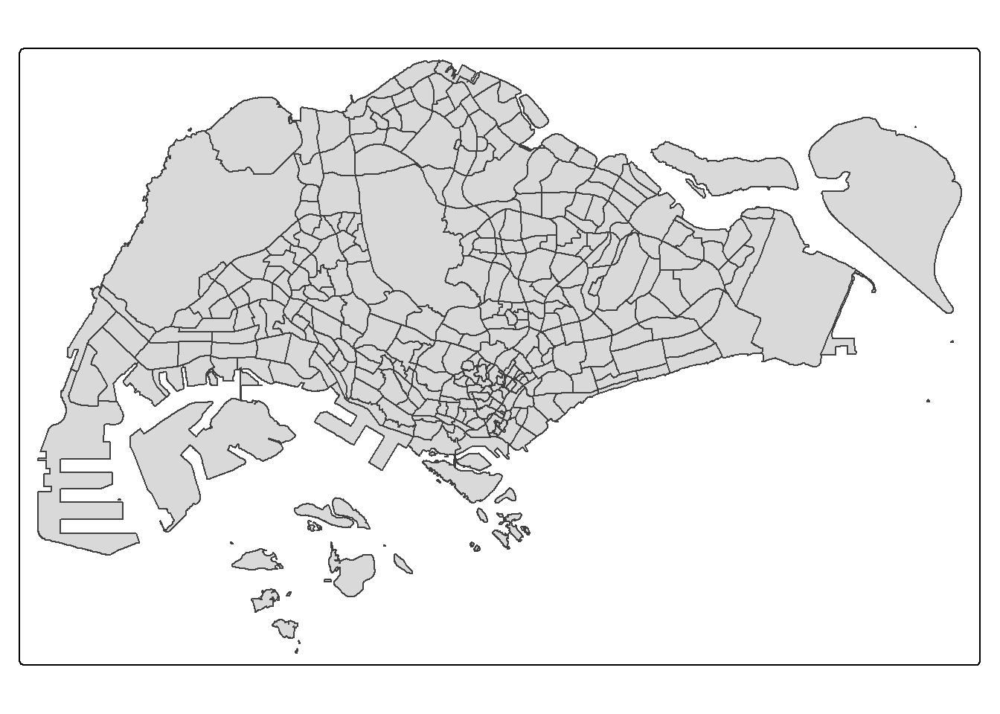
Note
By default, polygon areas are shaded light gray (gray85) and polygon borders are drawn in slightly darker gray (gray25).
4.2.2 Drawing a choropleth map using tm_polygons()
To draw a choropleth map showing the geographical distribution of a selected variable by planning subzone, the target variable, such as DEPENDENCY, is assigned to tm_polygons().
tm_shape(mpsz_pop2024)+
tm_polygons(fill = "DEPENDENCY")
Note
- The default interval binning used to draw the choropleth map is called “pretty”. A detailed discussion of the data classification methods supported by tmap is provided under sub-section 4.3.
- The default colour scheme used is
blues3of ColorBrewer (covered in more detail under sub-section 4.4). - By default, missing values are shaded in grey.
4.2.3 Drawing a choropleth map using tm_fill() and tm_border()
tm_polygons() is a wrapper of tm_fill() and tm_borders(). tm_fill() shades the polygons using the default colour scheme, and tm_borders() adds the boundaries of the polygon features onto the choropleth map.
The following code draws a choropleth map using tm_fill() alone.
tm_shape(mpsz_pop2024)+
tm_fill("DEPENDENCY")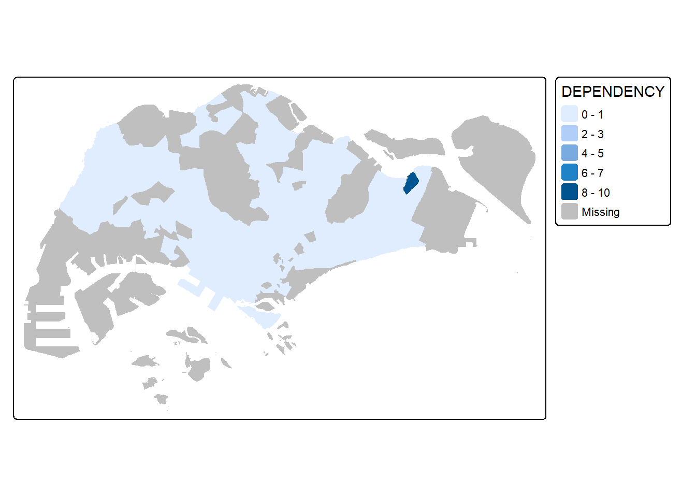
Notice that the planning subzones are shaded according to their respective DEPENDENCY values.
tm_borders() adds the boundaries of the planning subzones, as shown below.
tm_shape(mpsz_pop2024)+
tm_fill("DEPENDENCY") +
tm_borders()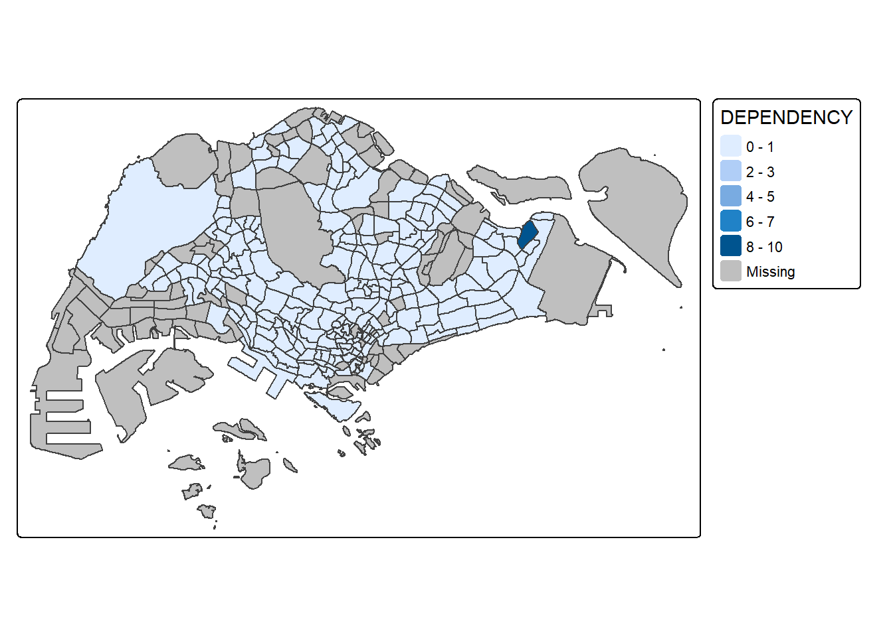
Notice that light-gray border lines have been added onto the choropleth map.
The fill_alpha argument is used to define transparency number between 0 (totally transparent) and 1 (not transparent). By default, the alpha value of the col is used (normally 1).
Beside fill_alpha, tm_borders() takes three other arguments:
col= border colour,lwd= border line width. The default is 1, andlty= border line type. The default is “solid”.
tm_shape(mpsz_pop2024)+
tm_fill("DEPENDENCY") +
tm_borders(col = "grey60",
lwd = 0.1,
lty = "dashed")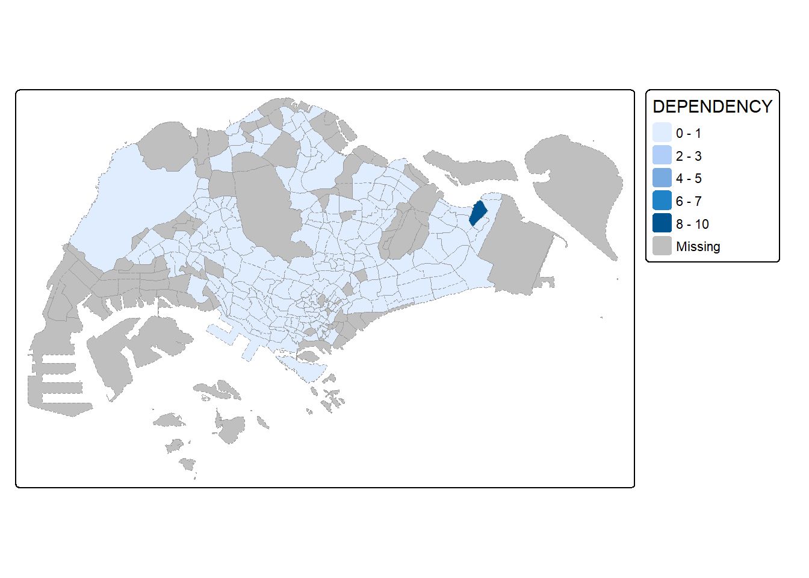
4.3 Data classification methods of tmap
Most choropleth maps employ some methods of data classification. The point of classification is to take a large number of observations and group them into data ranges or classes.
tmap provides a total ten data classification methods, namely: fixed, sd, equal, pretty (default), quantile, kmeans, hclust, bclust, fisher, and jenks.
To define a data classification method, the style argument of tm_fill() or tm_polygons() is used.
4.3.1 Plotting choropleth maps with built-in classification methods
The code chunk below shows a quantile data classification that used 5 classes.
tm_shape(mpsz_pop2024) +
tm_polygons(fill = "DEPENDENCY",
fill.scale = tm_scale_intervals(
style = "quantile",
n = 5)) +
tm_borders(fill_alpha = 0.5)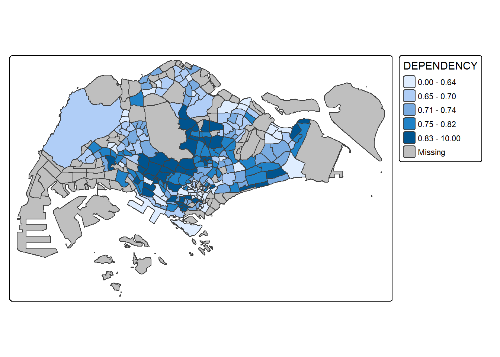
In the code chunk below, equal data classification method is used.
tm_shape(mpsz_pop2024) +
tm_polygons(fill = "DEPENDENCY",
fill.scale = tm_scale_intervals(
style = "equal",
n = 5)) +
tm_borders(fill_alpha = 0.5)Notice that the distribution of quantile data classification method are more evenly distributed then equal data classification method.
Comparing classification methods:
The following choropleth maps use different classification methods supported by tmap, to compare their differences.
tm_shape(mpsz_pop2024) +
tm_polygons(fill = "DEPENDENCY",
fill.scale = tm_scale_intervals(
style = "sd",
n = 5)) +
tm_borders(fill_alpha = 0.5)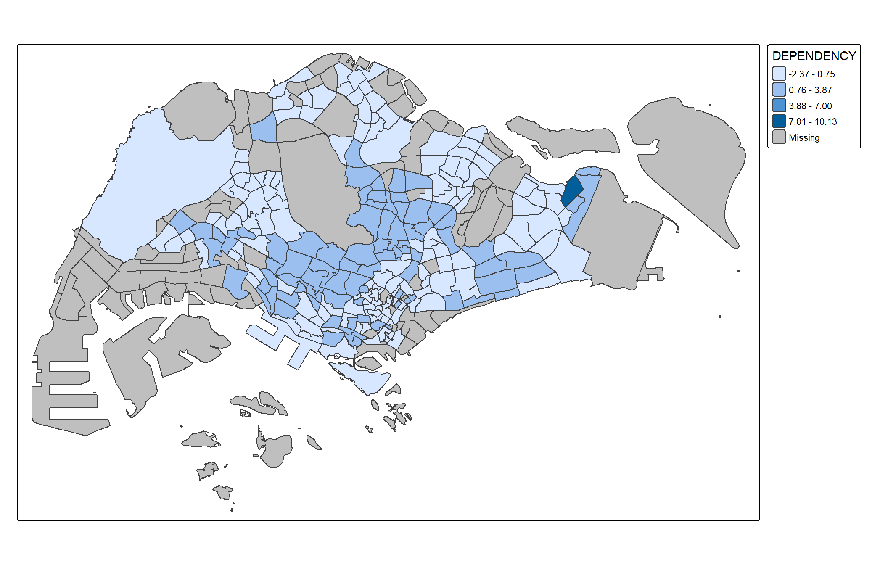
tm_shape(mpsz_pop2024) +
tm_polygons(fill = "DEPENDENCY",
fill.scale = tm_scale_intervals(
style = "equal",
n = 5)) +
tm_borders(fill_alpha = 0.5)
tm_shape(mpsz_pop2024) +
tm_polygons(fill = "DEPENDENCY",
fill.scale = tm_scale_intervals(
style = "pretty",
n = 5)) +
tm_borders(fill_alpha = 0.5)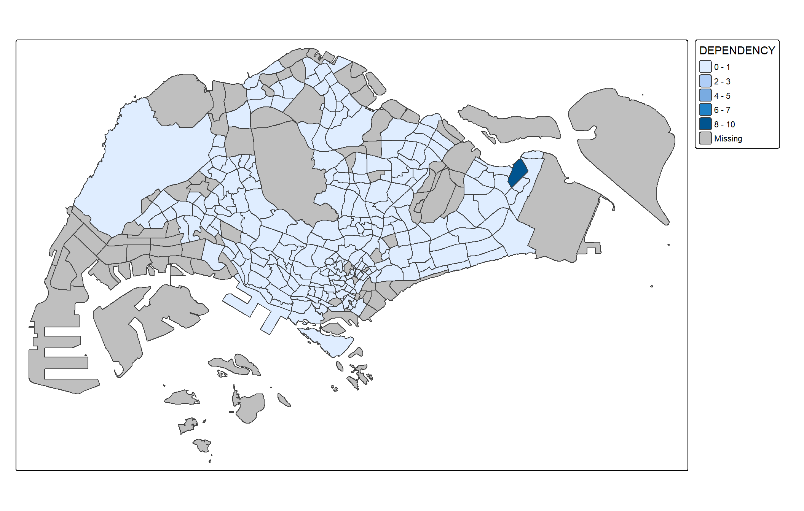
tm_shape(mpsz_pop2024) +
tm_polygons(fill = "DEPENDENCY",
fill.scale = tm_scale_intervals(
style = "quantile",
n = 5)) +
tm_borders(fill_alpha = 0.5)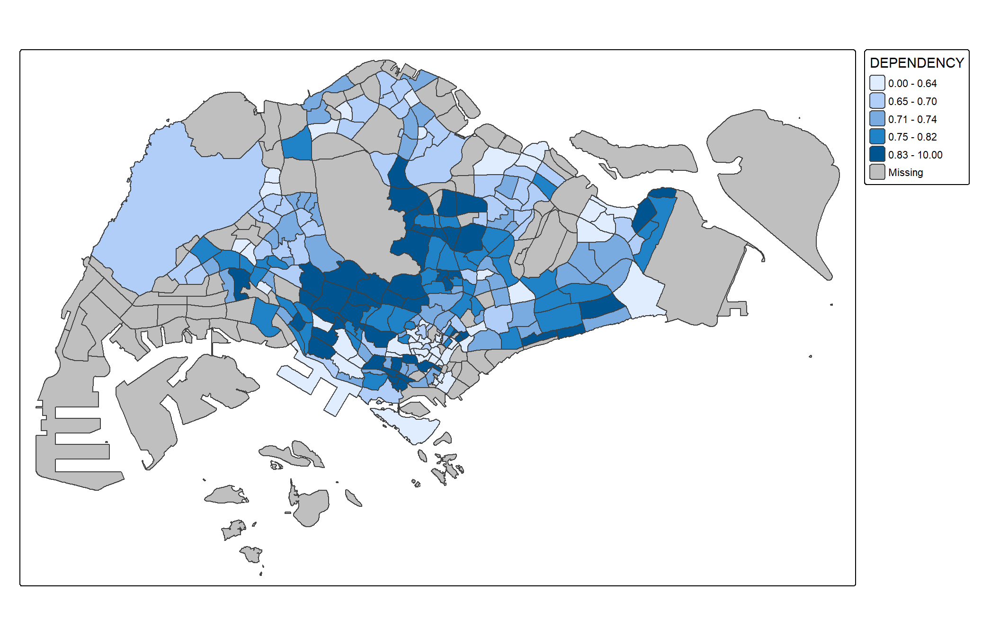
tm_shape(mpsz_pop2024) +
tm_polygons(fill = "DEPENDENCY",
fill.scale = tm_scale_intervals(
style = "kmeans",
n = 5)) +
tm_borders(fill_alpha = 0.5)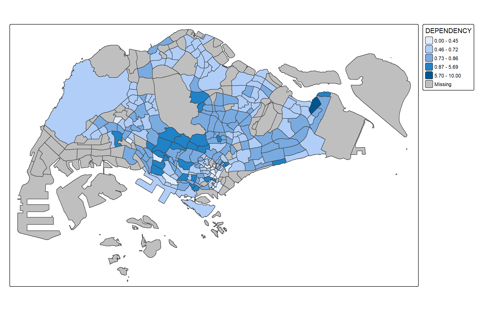
tm_shape(mpsz_pop2024) +
tm_polygons(fill = "DEPENDENCY",
fill.scale = tm_scale_intervals(
style = "hclust",
n = 5)) +
tm_borders(fill_alpha = 0.5)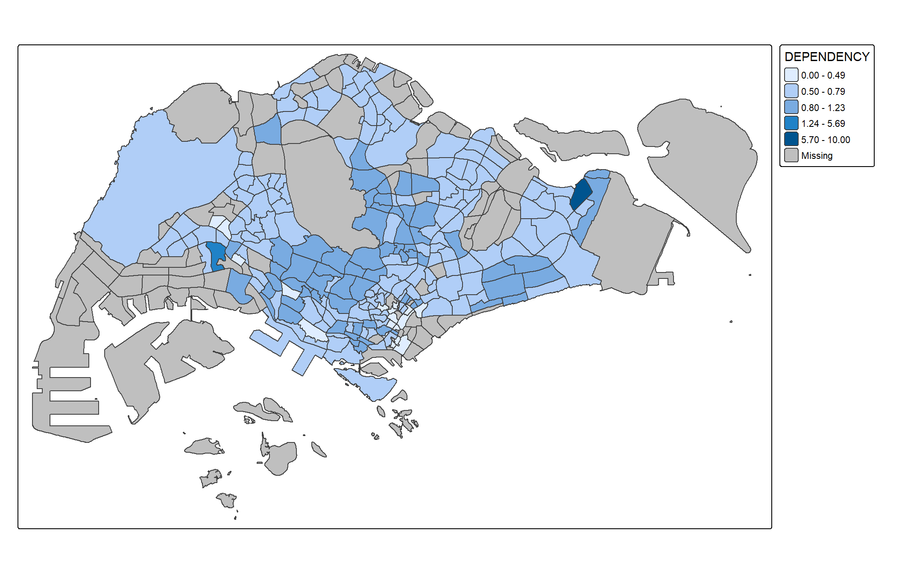
tm_shape(mpsz_pop2024) +
tm_polygons(fill = "DEPENDENCY",
fill.scale = tm_scale_intervals(
style = "bclust",
n = 5)) +
tm_borders(fill_alpha = 0.5)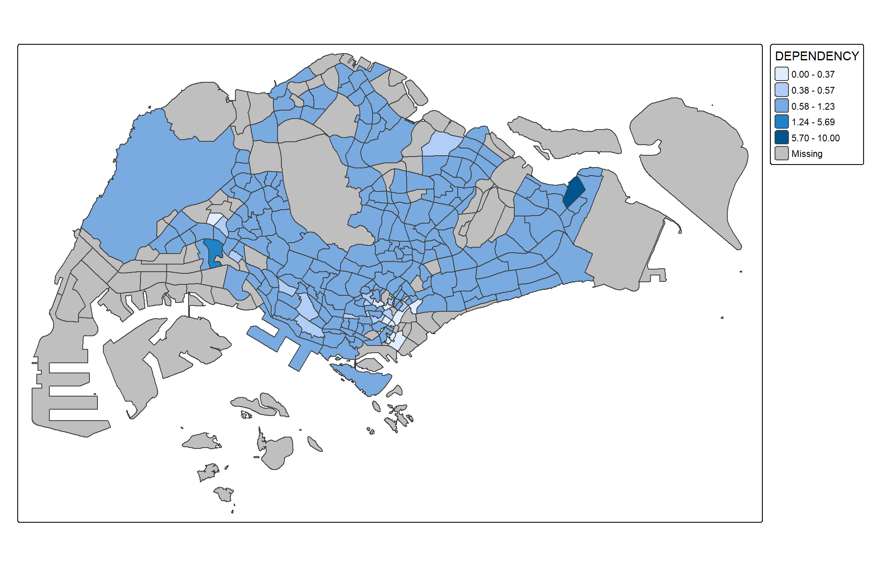
tm_shape(mpsz_pop2024) +
tm_polygons(fill = "DEPENDENCY",
fill.scale = tm_scale_intervals(
style = "fisher",
n = 5)) +
tm_borders(fill_alpha = 0.5)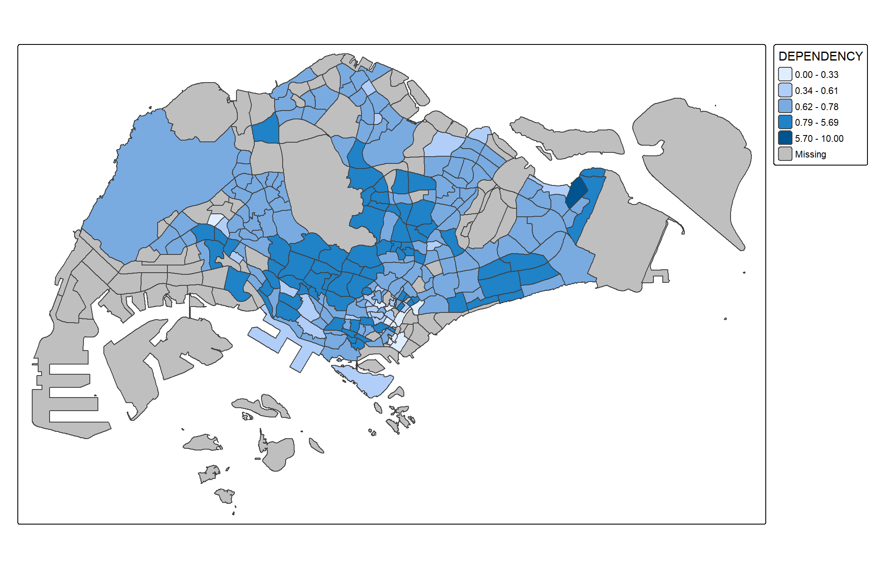
tm_shape(mpsz_pop2024) +
tm_polygons(fill = "DEPENDENCY",
fill.scale = tm_scale_intervals(
style = "jenks",
n = 5)) +
tm_borders(fill_alpha = 0.5)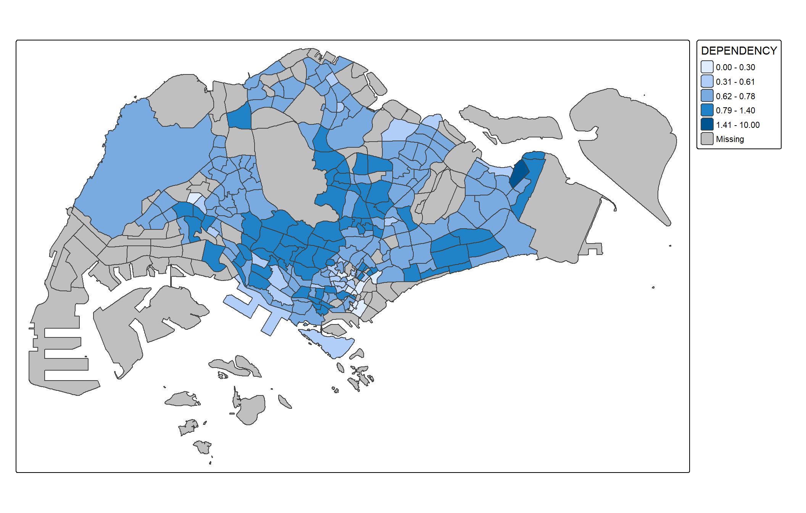
Note
Observation:
Different classification methods produce noticeably different color patterns. Methods like equal and sd are heavily skewed by the outlier, compressing nearly all subzones into a single pale class. In contrast, methods like quantile and jenks adapt to the data’s actual spread, revealing much clearer spatial variation across subzones. Choosing the right classification method based on the data’s distribution is therefore crucial to avoid misleading choropleth maps.
Comparing number of classes:
The following choropleth maps use the same classification method (kmeans) with different numbers of classes (2, 6, 10, and 20), to compare differences in output.
tm_shape(mpsz_pop2024) +
tm_polygons(fill = "DEPENDENCY",
fill.scale = tm_scale_intervals(
style = "kmeans",
n = 2)) +
tm_borders(fill_alpha = 0.5)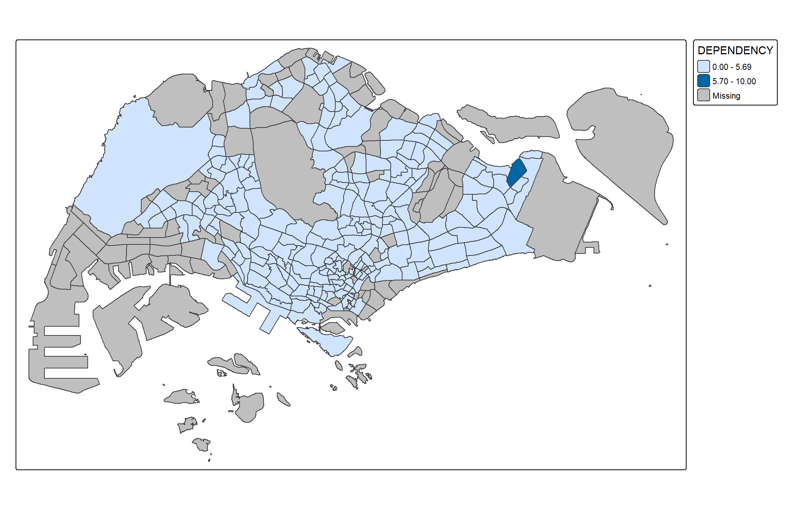
tm_shape(mpsz_pop2024) +
tm_polygons(fill = "DEPENDENCY",
fill.scale = tm_scale_intervals(
style = "kmeans",
n = 6)) +
tm_borders(fill_alpha = 0.5)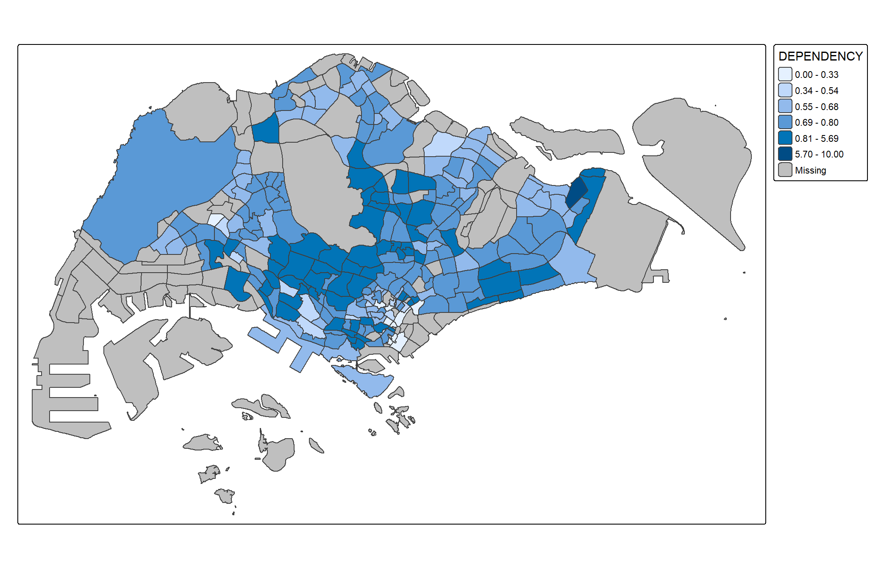
tm_shape(mpsz_pop2024) +
tm_polygons(fill = "DEPENDENCY",
fill.scale = tm_scale_intervals(
style = "kmeans",
n = 10)) +
tm_borders(fill_alpha = 0.5)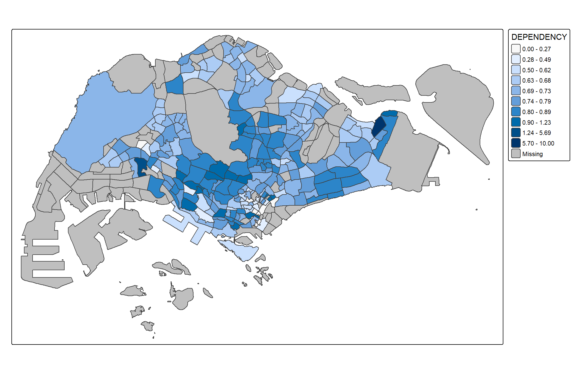
tm_shape(mpsz_pop2024) +
tm_polygons(fill = "DEPENDENCY",
fill.scale = tm_scale_intervals(
style = "kmeans",
n = 20)) +
tm_borders(fill_alpha = 0.5)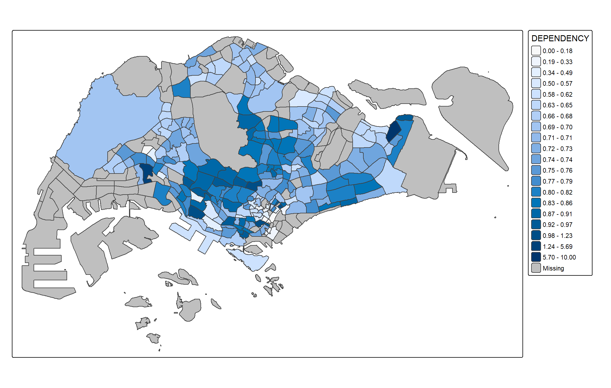
Note
Observation:
Using different number of classes within the same classification method affects how much detail the map reveals. With n=2, the outlier dominates the classification, splitting subzones into just two broad groups with almost no visible variation among the majority. As the number of classes increases, finer distinctions emerge, revealing spatial clusters that were hidden at lower values of n. However, at very high values of n, adjacent shades become difficult to tell apart, and the added precision offers diminishing returns for visual interpretation.
4.3.2 Plotting choropleth map with custom breaks
For all built-in styles, category breaks are computed internally. To override these defaults, breakpoints can be set explicitly using the breaks argument of tm_scale_intervals(). In tmap, breaks include a minimum and maximum. As a result, n+1 elements must be specified in breaks to end up with n categories, with values in increasing order.
Before setting break points, it is good practice to check descriptive statistics on the variable.
summary(mpsz_pop2024$DEPENDENCY) Min. 1st Qu. Median Mean 3rd Qu. Max. NAs
0.0000 0.6750 0.7283 0.7563 0.8140 10.0000 94 With reference to the results above, break points are set at 0.60, 0.70, 0.80, 0.90. In addition, a minimum and maximum are also required in the breaks vector, which are set at 0 and 100 respectively. The resulting breaks vector is c(0, 0.60, 0.70, 0.80, 0.90, 1.00).
tm_shape(mpsz_pop2024)+
tm_polygons(fill = "DEPENDENCY",
fill.scale = tm_scale_intervals(
breaks = c(0, 0.60, 0.70, 0.80, 0.90, 1.00))) +
tm_borders(fill_alpha = 0.5)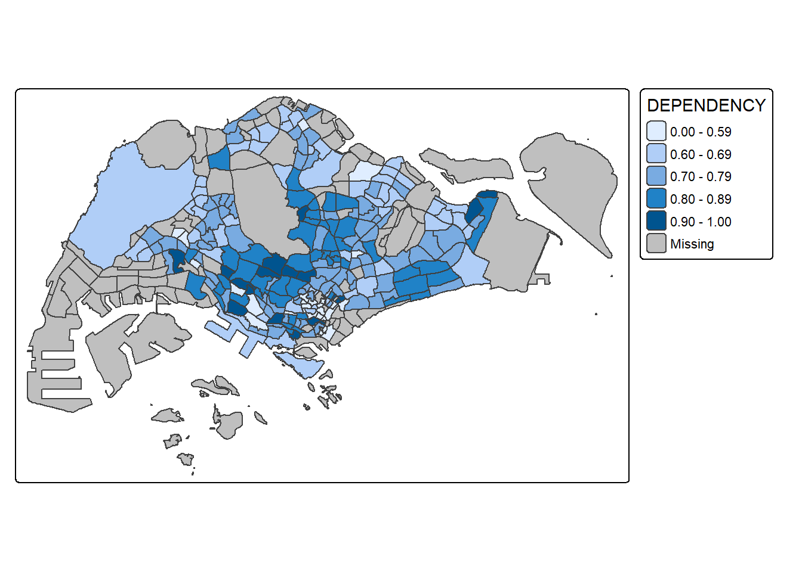
4.4 Colour Scheme
tmap supports colour ramps either defined by the user or a set of predefined colour ramps from the RColorBrewer package.
4.4.1 Using ColourBrewer Palette
To change the colour, the preferred palette is assigned to the values argument.
tm_shape(mpsz_pop2024) +
tm_polygons(fill = "DEPENDENCY",
fill.scale = tm_scale_intervals(
style = "quantile",
n = 5,
values = "brewer.greens")) +
tm_borders(fill_alpha = 0.5)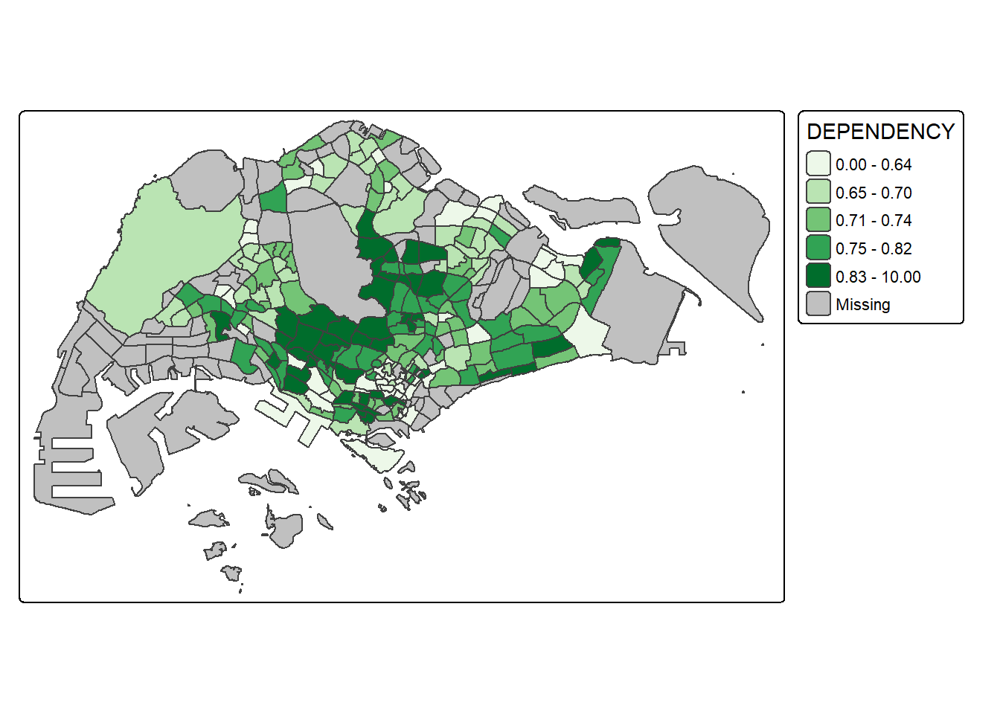
Notice that the choropleth map is shaded in green.
To reverse the colour shading, add a “-” prefix.
tm_shape(mpsz_pop2024) +
tm_polygons(fill = "DEPENDENCY",
fill.scale = tm_scale_intervals(
style = "quantile",
n = 5,
values = "-brewer.greens")) +
tm_borders(fill_alpha = 0.5)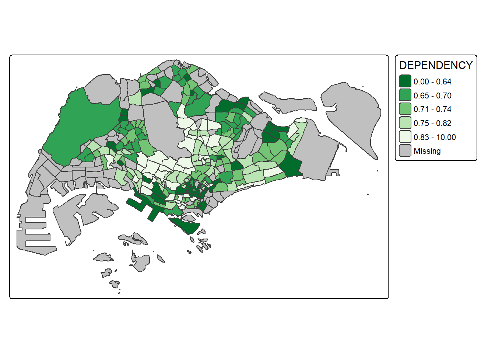
Notice that the colour scheme has been reversed.
4.4.2 Cartographic Furniture
Beside map style, tmap also provides arguments to draw other map furniture such as compass, scale bar and grid lines.
In the code chunk below, tm_compass(), tm_scale_bar(), tm_grid(), and tm_credit() are used to add compass, scale bar, grid lines and data sources onto the choropleth map.
tm_shape(mpsz_pop2024) +
tm_polygons(fill = "DEPENDENCY",
fill.scale = tm_scale_intervals(
style = "quantile",
n = 5)) +
tm_borders(fill_alpha = 0.5) +
tm_compass(type="8star", size = 2) +
tm_scalebar() +
tm_grid(lwd = 0.1, alpha = 0.2) +
tm_credits("Source: data.gov.sg & singstat",
position = c("left", "bottom"))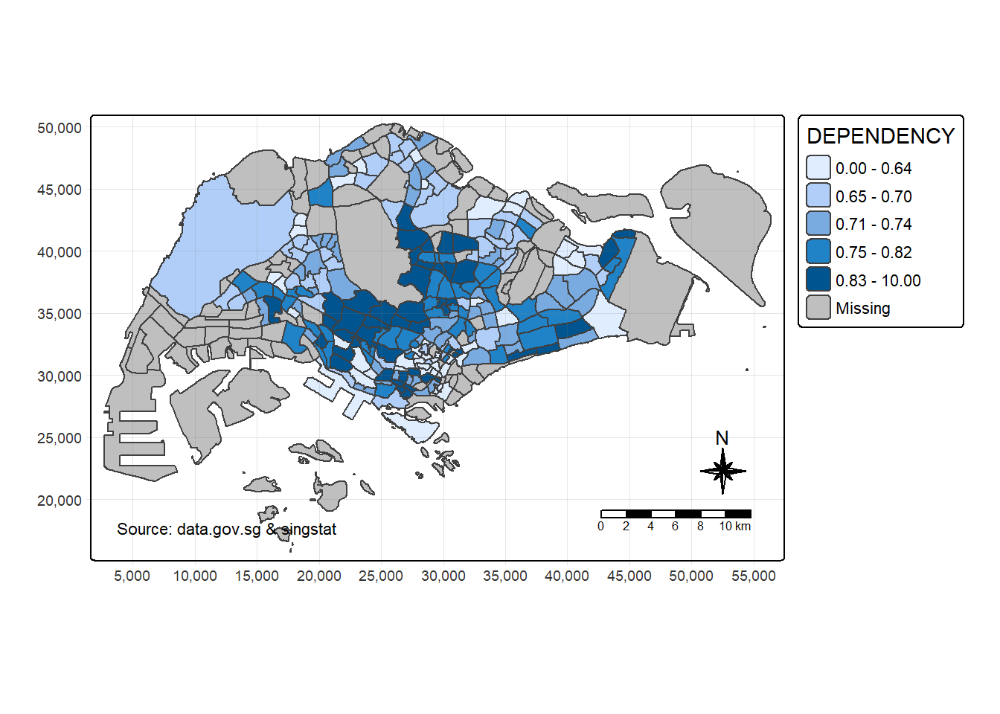
4.5 Map Layout
Map layout refers to the combination of all map elements into a cohensive map. It includes the map background, frame, typography, scale, aspect ratio, margins, and more.
The map layout can be customized using the tm_layout() function. This section covers the most often used arguments of this function, using the dependency choropleth map as an example.
4.5.1 Map Legend
In tmap, several legend options are provided to change the placement, format and appearance of the legend.
tm_shape(mpsz_pop2024) +
tm_polygons(fill = "DEPENDENCY",
fill.scale = tm_scale_intervals(
style = "quantile",
n = 5),
fill.legend = tm_legend(
title = "Dependency Ratio")) +
tm_pos_auto_in() +
tm_borders(fill_alpha = 0.5) +
tm_compass(type="8star", size = 2) +
tm_scalebar() +
tm_grid(lwd = 0.1, alpha = 0.2) +
tm_credits("Source: data.gov.sg & singstat",
position = c("left", "bottom"))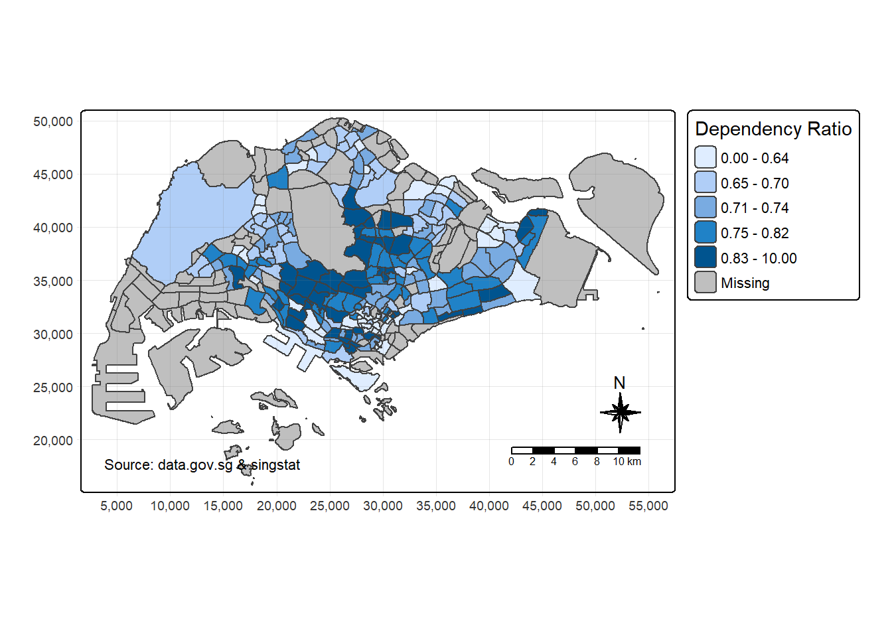
4.5.2 Map Style
tmap allows a wide variety of layout settings to be changed. They can be called by using tmap_style().
The code chunk below shows the natural style is used.
tm_shape(mpsz_pop2024) +
tm_polygons(fill = "DEPENDENCY",
fill.scale = tm_scale_intervals(
style = "quantile",
n = 5,
values = "-brewer.greens")) +
tm_borders(fill_alpha = 0.5) +
tmap_style("natural")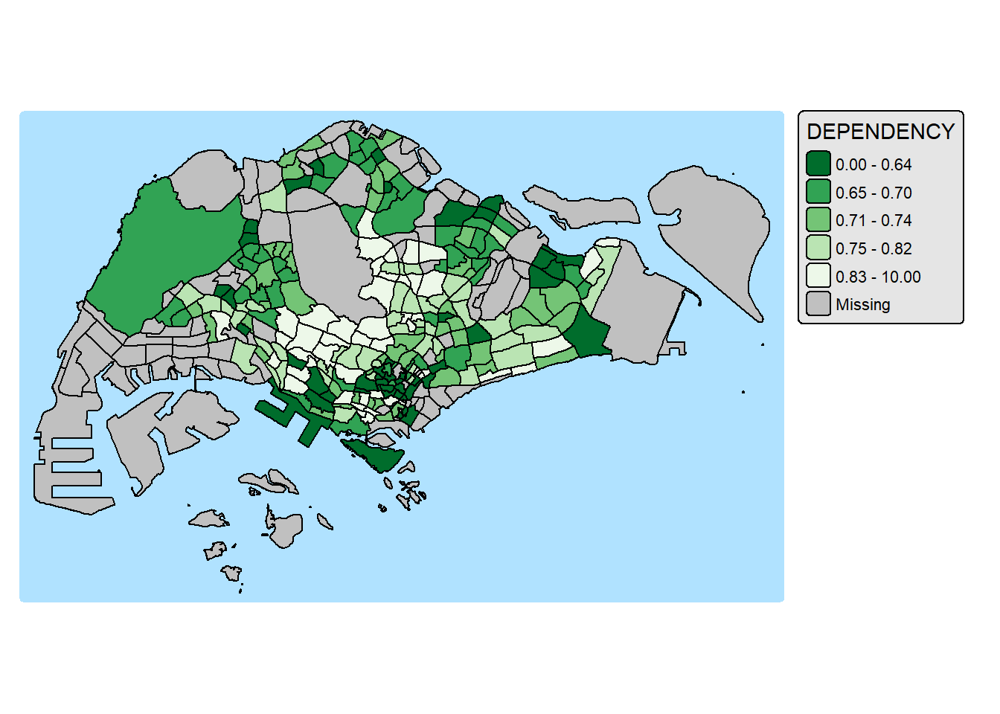
To restore the default style, the following code is used:
tmap_style("white")